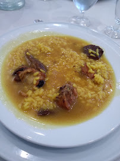
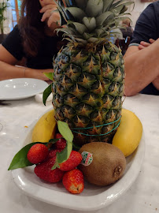
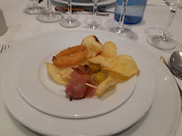

Tots els menus inclouen begudes
Menú 1
Picada central
Pernil Salat
Calamars a la romana
Croquetes de pollastre i verdura
Caragols
Primer Plat
Arròs Brut
Segon Plat
Porcella, xot i pollastre amb les seves respectives guarncions

Postre
Fruita Variada
Gelat d'ametlla amb ensaimada
Cafès
Preu: 20€
Al·lèrgies: Conté fruits secs, gluten i marisc.
Menú Infantil
Picada central
Patatilles i olives
Croquetes de pollastre
Calamars a la romana
Primer Plat
Arròs brut
Segon Plat
Pit de pollastre arrebossat amb patates

Postre
Gelat
Preu: 10€
Al·lèrgies:Conté gluten i làctics.